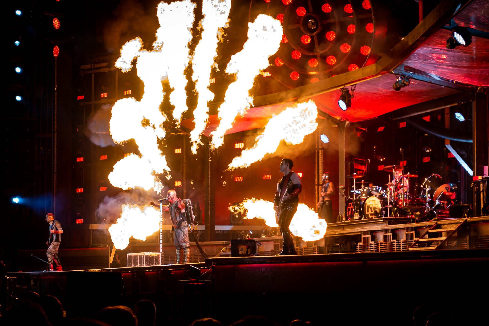
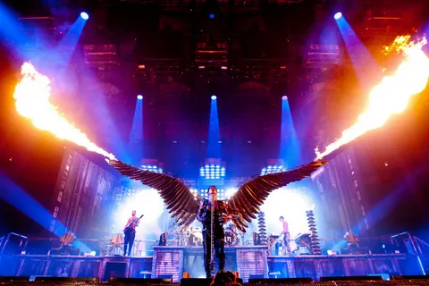
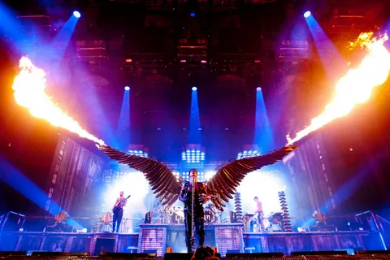

Rammstein — немецкая метал-группа, образованная в январе 1994 года в Берлине. Название происходит от названия авиабазы Рамштайн (нем. Ramstein), дословно: «каменный таран».
Музыкальный стиль группы относится к жанру индастриал-метала (конкретно — его немецкой разновидности Neue Deutsche Härte). Основные черты творчества группы: специфический ритм, в котором выдержана большая часть композиций, и эпатирующие тексты песен.
Состав группы (с момента образования в 1994 году ни разу не менялся):
Тилль Линдеманн — вокал, губная гармошка.
Рихард Круспе — соло-гитара, бэк-вокал.
Пауль Ландерс — ритм-гитара, бэк-вокал.
Оливер Ридель — бас-гитара.
Кристиан Лоренц — клавишные, сэмплы, синтезаторы, труба, программирование.
Кристоф Шнайдер — ударные.
Особую известность группе принесли сценические выступления, часто сопровождаемые использованием пиротехники, получившие признание в музыкальной среде.
Некоторые награды и премии: премия MTV Europe Music Award лучшему немецкому исполнителю (2005), премия поп-культуры (2017), премия Echo Pop за лучшее выступление (2005), премия Echo Pop за лучший немецкий музыкальный клип (2011).
Несколько фото с концертов:
.webp) 
